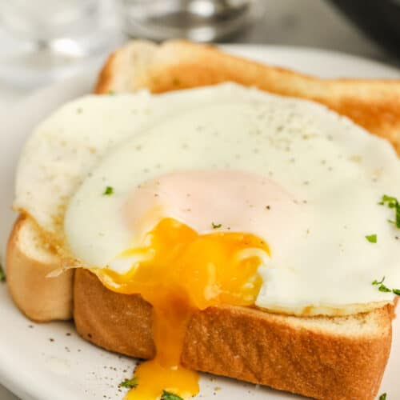

Basted Eggs

Description
This recipe produces a delicious, simple egg with satisfying, set whites and a creamy,
runny yolk. It's similar to a poached egg, but more flavorful and less fussy.
Ingredients
- 1 1/2 tablespoons salted butter
- 2 large eggs
- 1 tablespoon water
- 1/8 teaspoon freshly ground black pepper
- 1 pinch flaky sea salt, or to taste
Steps
- Melt butter in a medium nonstick skillet over medium heat.
- Carefully crack eggs into the skillet and let cook until whites have almost set,
about 1 minute.
- Add water, cover skillet with a lid or cookie sheet, reduce heat to medium-low and cook
until whites have set, yolks are still runny, and some of white has set over yolk, 1 to
2 more minutes.
- Remove lid and transfer eggs to a serving plate, garnish with pepper and flaky salt, if desired.
Back